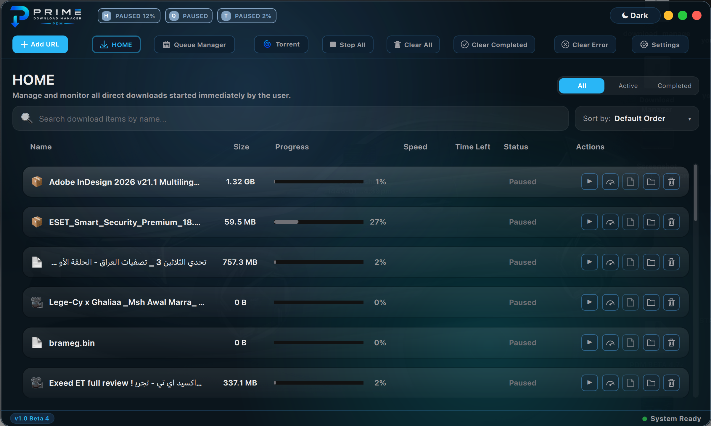
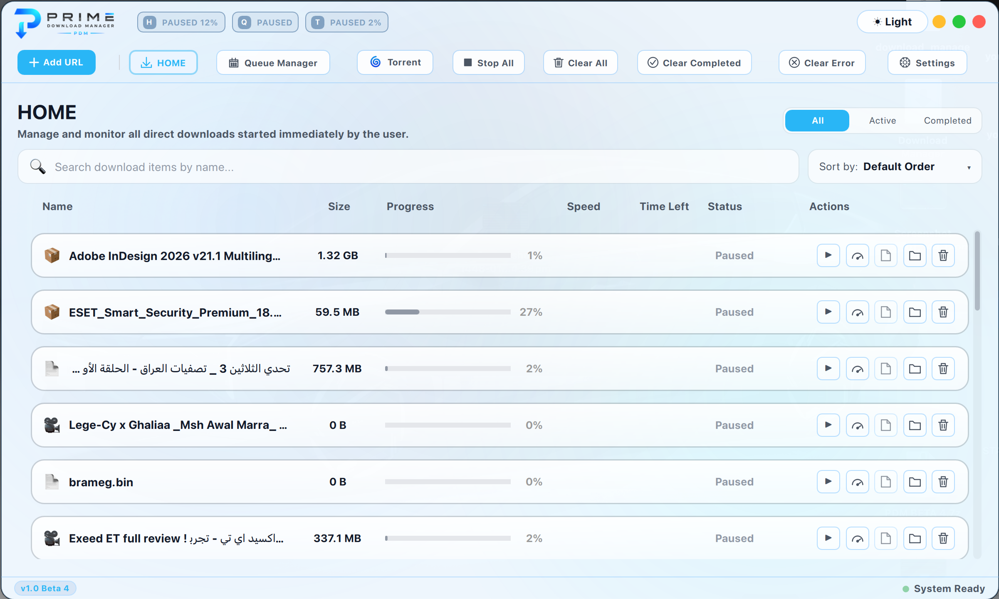
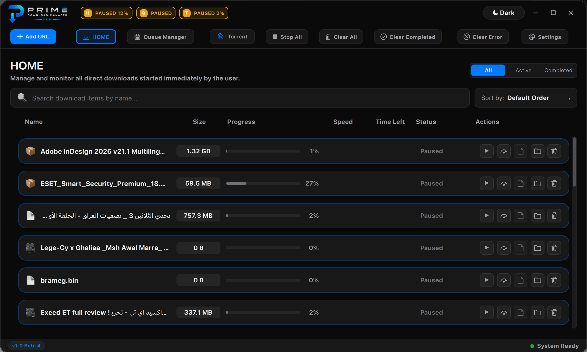
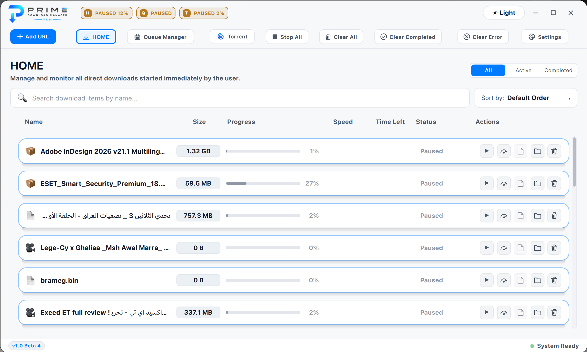
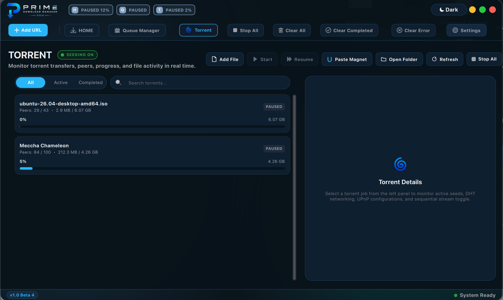
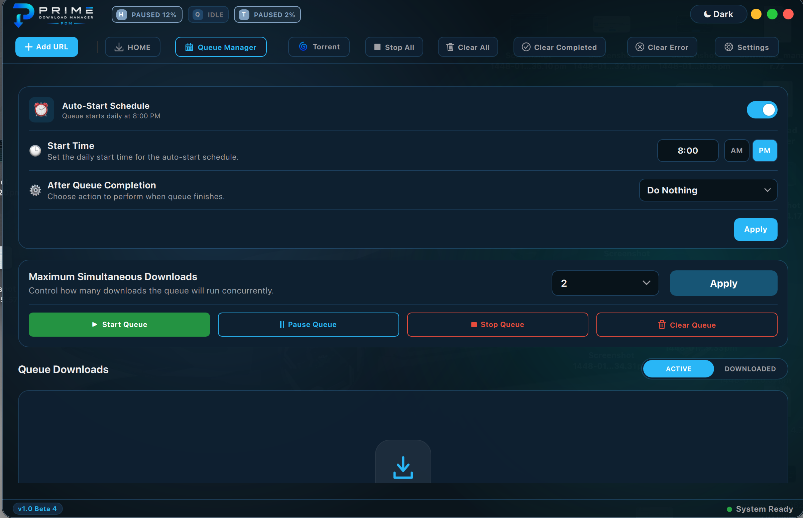
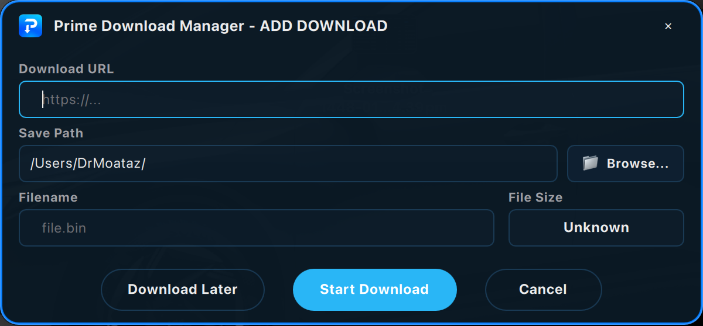
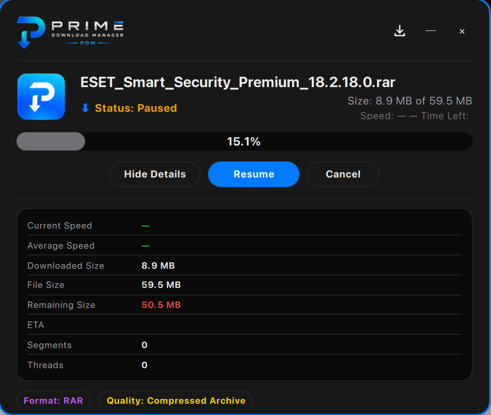

Prime Download Manager accelerates every download with multiple connections, captures files from your browser, grabs videos & playlists, handles torrents — all in a beautiful Glass or Classic interface.

One app for files, videos, playlists, and torrents — with the speed and control power users expect.
A multi-connection engine splits each file into parallel segments for maximum speed — with pause, resume, and auto-reconnect.
Download videos and whole playlists from thousands of sites, choose the quality, and PDM merges audio + video automatically.
Built-in torrent and magnet support, managed right next to your other downloads.
One-click capture from Chrome, Edge, Brave, and Opera the moment a download starts.
Group downloads into queues, schedule start/stop times, set retries, and choose post-completion actions.
Frosted Glass or crisp Classic — each in Light & Dark, with multiple color presets.
PDM spots files you already downloaded and lets you re-download, open, or skip.
Credentials are encrypted on your own device. Nothing is sent to third parties.
Make it yours — switch between Glass and Classic, Light and Dark.






